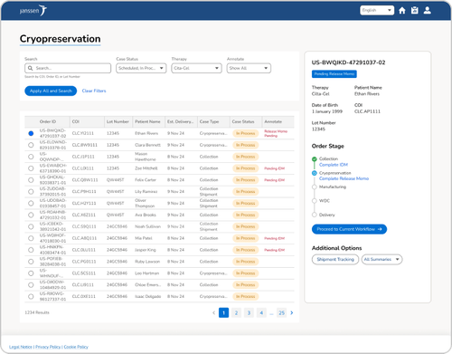
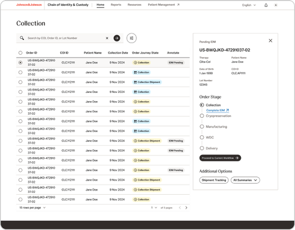
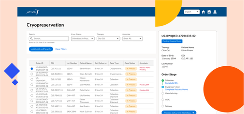

Under One Brand
Turning a platform with a retired brand, a default Salesforce look and a borrowed name into one coherent J&J product, designed and hand-coded end to end.
At A Glance
Problem
The platform wore a retired brand, looked like default Salesforce, and users knew it by the wrong name.
What I Did
Secured the name and rebrand rights, then designed and coded a J&J component library on Salesforce.
Impact
One J&J product within the CQUENCE® ecosystem, on a system built to cut maintenance.
The Problem
In 2023, Janssen became Johnson & Johnson, but our platform still carried the Janssen logo. The deeper issue: it answered to three identities at once, and the ~10% of users who also use CQUENCE® moved between two products that felt like strangers.
A legal name nobody used
"COI/COC" described the regulated process, not the product.
A borrowed name everyone used
Users called it "CQUENCE®" after its shared login, a brand we didn't own.
A look that was no one's brand
Default Salesforce blue, mistaken internally for our own.
Two Key Decisions
Earning the name
Claiming the trusted CQUENCE® name was legally fuzzy as it had already been trademarked by another J&J digital product, and getting it wrong was a compliance risk. Over two years of sessions with leadership and legal, I cleared the rebrand rights, secured the name and won funding. The result was "CQUENCE® Chain of Identity & Custody."
Translating J&J to Salesforce
J&J's two design systems weren't built for a data-heavy Salesforce app, and their tokens contradicted each other. I went native-first: real Salesforce components wherever they matched, semi-custom ones only for the gaps, and one documented set of tokens as the source of truth.
The Build
As the only designer, I hand-coded most of the system in HTML, CSS and JavaScript, working alongside four in-house and two agency engineers. I personally owned and delivered:
- The token system: reconciled across both J&J systems
- The component library: navbar, table, date picker, form fields, checklist navigation and more
- The pages: landing, completed order summary, shipment tracking, upcoming orders and legal pages
- Accessibility gates: no page moved on without a green Lighthouse AA score
What Leadership Said
"The redesign didn't just refresh the platform. It showed me what it should have looked like all along."
A VP seeing it for the first time. Leadership agreed it finally "feels like J&J."
The Outcome
The platform is fully off default Salesforce and onto a true J&J identity, unified with the CQUENCE® ecosystem. It shipped in September 2026, and a user survey in November 2026 will measure the shift.
Out-of-the-box Salesforce with minimal customization and the retired Janssen logo.

The J&J design system, with Salesforce kept as the structure underneath.

More Like This
